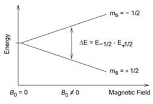

Chemical Sciences →Physical Chemistry Lab →List Of Experiments
Nuclear Magnetic Resosnace Spectrocopy and Evaulation of Simple 1H NMR Spectra of Select Organic Compounds
Nuclei with odd atomic (number of protons) or mass number (total number of protons and neutrons) or both have quantized spin angular momentum and a magnetic moment. Interaction of the magnetic moment of an atomic nucleus (µ) with an external magnetic field results in absorption of energy and change their spin orientation with respect to the external field. NMR gives the chemical properties of molecules by studying the magnetic properties of the atomic nuclei which is measured by resonant absorption by nuclei.
|  |  |
The nuclear spin energy levels in an external magnetic field B0.
Source: http://www.physicscentral.com/explore/action/fmri1.cfm
Chemical Shift:
Nuclei in a different chemical environment experience different magnetic field. The electron cloud around the nuclei induces electronic angular momentum which gives rise to an additional magnetic field ß, which is given as:
δß = -σß0
where 'σ' is the shield constant. The electrons around the nucleus shield the nuclei from effective magnetic field and requires energy of lower frequency to cause resonance. Therefore different nuclei in the same compound come into resonance at different frequencies. In general hydrogens bound to carbons attached to electron withdrawing groups tend to resonate at higher frequencies . The position of where a particular hydrogen atom resonates relative to TMS is called its chemical shift.
δ = Observed chemical shift (Hz) x 106/Spectrometer frequency (Hz) (parts per million)
The peak value of TMS is assigned as d = 0.00.
Solvent and internal standard:
Tetramethylsilane is used as an internal standard during the NMR measurements for the following reasons:
1. Is inert, non toxic, low boiling point and can be recovered by distillation
2. Very small amount is required for measurement
3. Has 12 equivalent protons and thus give a single strong peak
4. The signal appears outside (more upfield) away from most of the protons signals
When using the modern NMR instruments, no internal standard is added to the sample to be measure. The difference between the solvent signal and the TMS is known. The modern instruments detect the solvent signal and lock them, which now can serve as the internal standard.

Source: jpkc.henu.edu.cn
To record a NMR spectrum of a particular sample it is required to dissolve the sample in a solvent. To avoid the sample signals one needs to use deuterated solvent. For a non polar to moderately polar compounds deuterated chloroform is commonly used. For polar compounds deuterated Dimethyl sulfoxide (DMSO) is commonly used. Any traces of impurity in the solvents used are detected at CHCl3 : 7.25 ppm and DMSO : 2.5 ppm
NMR Spectra:
An NMR spectrum gives various information of the compound that it helps in structural elucidation of the organic molecule;
• The number of signals gives the the number of different sets of protons present in the sample measured.
• Chemical shift gives the environment of the protons
• Multiplicity gives information on the number of protons on adjacent atoms
• Integration of the peaks (peak area) gives the number of protons in each environment
Source: http://cactus.dixie.edu/smblack/chem2310/ch5/LG_key_Ch5.pdf